Guía Técnica, Fundamentación Física y Documentación Pedagógica del Proyecto
En 1963, el matemático y meteorólogo estadounidense Edward Norton Lorenz (1917–2008), trabajando en el MIT, intentaba modelar el comportamiento convectivo de la atmósfera terrestre mediante un modelo atmosférico simplificado. Al simplificar las ecuaciones hidrodinámicas fundamentales de Navier-Stokes y la ecuación de conducción de calor de Fourier aplicadas a una capa de fluido calentada desde abajo (convección de Rayleigh-Bénard), obtuvo un sistema no lineal acoplado de apenas tres ecuaciones diferenciales ordinarias.
Al reiniciar una simulación ingresando valores intermedios impresos en papel redondeados a tres decimales (ej. 0.506 en lugar de 0.506127), descubrió con asombro que la nueva trayectoria divergía rápidamente hasta volverse completamente irreconocible respecto a la original. Este hallazgo histórico dio origen a lo que hoy conocemos como caos determinista y al popularmente llamado "Efecto Mariposa".
| Elemento | Naturaleza | Interpretación Física en la Convección Atmosférica |
|---|---|---|
| \(x(t)\) | Variable dinámica | Tasa o intensidad de la rotación convectiva (velocidad de los rodillos de convección). El signo indica el sentido de giro (horario o antihorario). |
| \(y(t)\) | Variable dinámica | Diferencia de temperatura entre las corrientes ascendentes y descendentes (gradiente térmico horizontal). |
| \(z(t)\) | Variable dinámica | Distorsión del perfil vertical de temperatura respecto a un gradiente lineal conductivo estable. |
| \(\sigma = 10\) | Parámetro (Prandtl) | Razón entre la viscosidad cinemática y la difusividad térmica del fluido (\(\sigma = \nu / \kappa\)). Para el aire suele rondar \(\sigma \approx 0.7\), pero Lorenz eligió 10 para estudiar convección en agua/fluidos viscosos representativos. |
| \(\rho = 28\) | Parámetro (Rayleigh) | Número de Rayleigh normalizado, proporcional a la diferencia de temperatura vertical entre la base y el tope. Representa el "motor" térmico del sistema. |
| \(\beta = 8/3\) | Parámetro (Aspecto) | Razón de aspecto geométrica de los cilindros convectivos horizontales (\(\beta = 4 / (1 + a^2)\) con \(a = 1/\sqrt{2}\)). |
El sistema de Lorenz contiene dos términos no lineales explícitos: los productos \(x \cdot z\) y \(x \cdot y\). Debido a este acoplamiento no lineal y a la geometría fractal del atractor, no existe una solución analítica exacta en términos de funciones elementales. La única forma rigurosa de conocer la evolución temporal es mediante integración numérica discretizada paso a paso.
En lugar de utilizar un método de paso fijo (como Euler o RK4 clásico con paso constante \(h\)), utilizamos la función estándar scipy.integrate.solve_ivp con el algoritmo method='RK45':
rtol=1e-8 y atol=1e-8. Cuando el movimiento es más suave, agranda el paso ahorrando tiempo de cómputo.lorenz_analysis.py)
El script lorenz_analysis.py está diseñado con una arquitectura puramente procedural, sin clases ni abstracciones innecesarias, organizado en 14 secciones estrictamente numeradas:
def lorenz(t, estado, sigma, rho, beta):
x, y, z = estado
dxdt = sigma * (y - x)
dydt = x * (rho - z) - y
dzdt = x * y - beta * z
return [dxdt, dydt, dzdt]
Toma el vector tridimensional de estado [x, y, z] y evalúa de forma directa y explícita el campo vectorial en el espacio de fases.
def simular_lorenz(estado_inicial, t_span, t_eval, sigma=SIGMA_DEFAULT,
rho=RHO_DEFAULT, beta=BETA_DEFAULT, rtol=RTOL_DEFAULT,
atol=ATOL_DEFAULT):
solucion = solve_ivp(
fun=lorenz,
t_span=t_span,
y0=estado_inicial,
t_eval=t_eval,
method="RK45",
args=(sigma, rho, beta),
rtol=rtol,
atol=atol
)
return solucion
Encapsula la llamada a solve_ivp de SciPy con parámetros por defecto modificables, garantizando coherencia en tolerancias numéricas y evitando duplicar código en los distintos análisis.
Se simula la trayectoria durante 40 unidades de tiempo partiendo desde \((1, 1, 1)\).
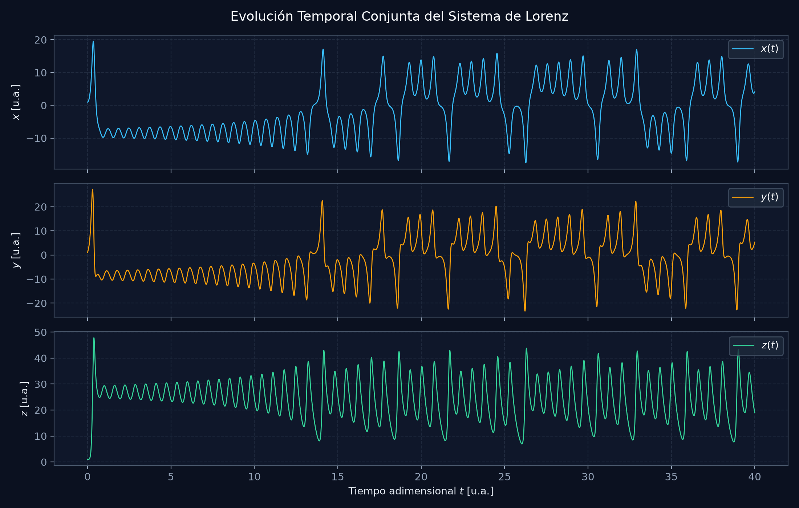
Interpretación: Se observa que las variables oscilan de forma estrictamente aperiódica. La variable \(x(t)\) pasa alternativamente de valores positivos a negativos de forma aparentemente aleatoria; estos cambios de signo corresponden al cambio de sentido de giro de los rodillos convectivos en el fluido atmosférico. La variable \(z(t)\) siempre permanece positiva y oscila por encima de la línea base.
Se descartan los primeros 5 segundos de transitorio inicial (\(t > 5.0\)) para visualizar la geometría del atractor a largo plazo.
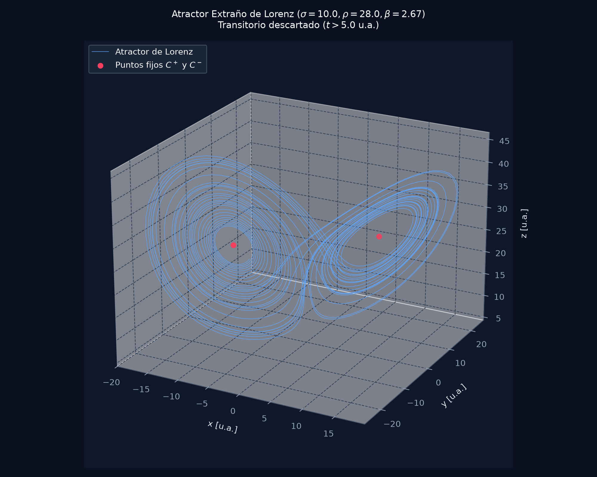
Interpretación: La trayectoria describe una figura similar a las alas de una mariposa. La órbita espirala alrededor de uno de los puntos fijos (\(C^+\)), ampliando gradualmente el radio de sus espiras hasta que un umbral crítico la eyecta hacia el lóbulo opuesto alrededor de \(C^-\). La trayectoria nunca se corta a sí misma en 3D (por el Teorema de Picard-Lindelöf de unicidad de soluciones) ni repite nunca un ciclo cerrado.
Se comparan dos estados que difieren únicamente en \(\Delta x(0) = 10^{-8}\): \(\mathbf{X}_1(0) = (1, 1, 1)\) y \(\mathbf{X}_2(0) = (1 + 10^{-8}, 1, 1)\).
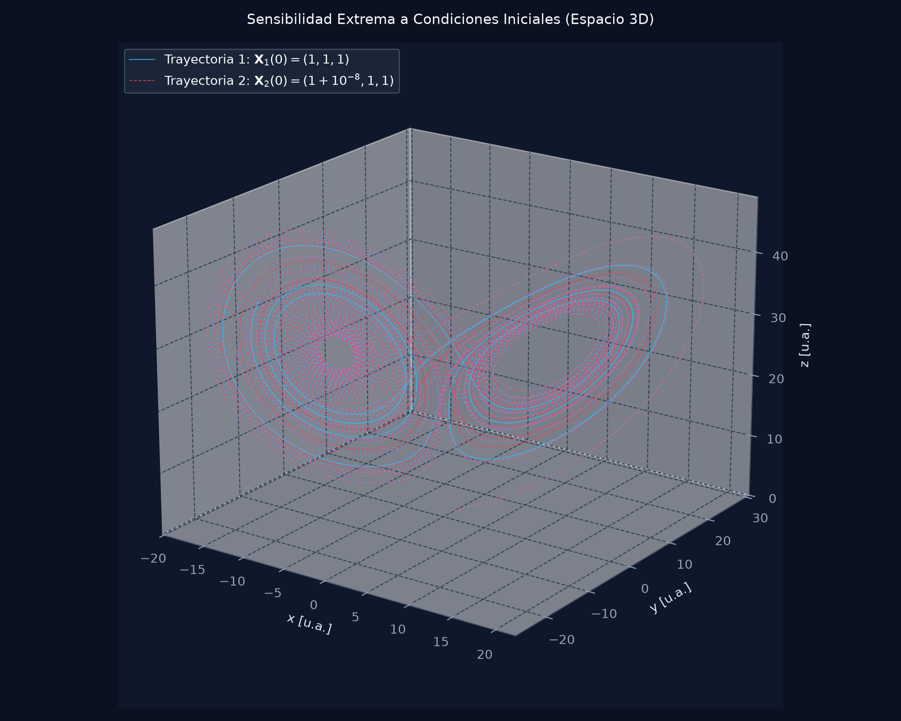
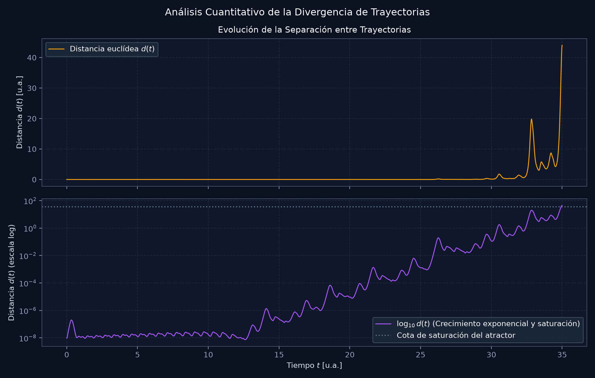
Para resolver el problema de la saturación, implementamos el método de Benettin con renormalizaciones periódicas:
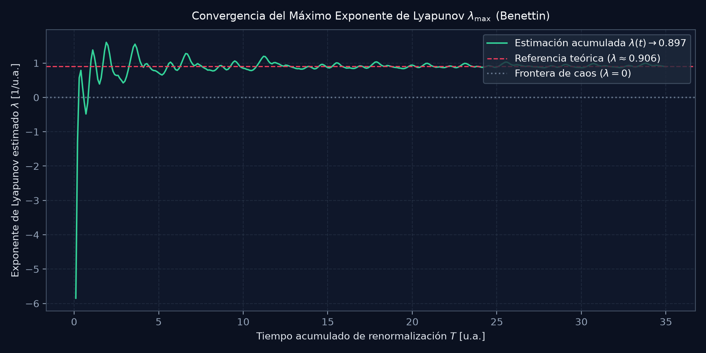
Resultado obtenido en nuestra simulación: $$\lambda_{\max} = \mathbf{0.8966 \text{ [1/u.a.]}}$$ Frente al valor canónico reportado en la literatura especializada (\(\lambda_{\text{ref}} \approx 0.9056\)), el error relativo es de apenas el 0.99%, demostrando la fidelidad del algoritmo implementado.
Manteniendo fijos \(\sigma = 10\) y \(\beta = 8/3\), exploramos la transición del sistema variando el parámetro térmico \(\rho\):
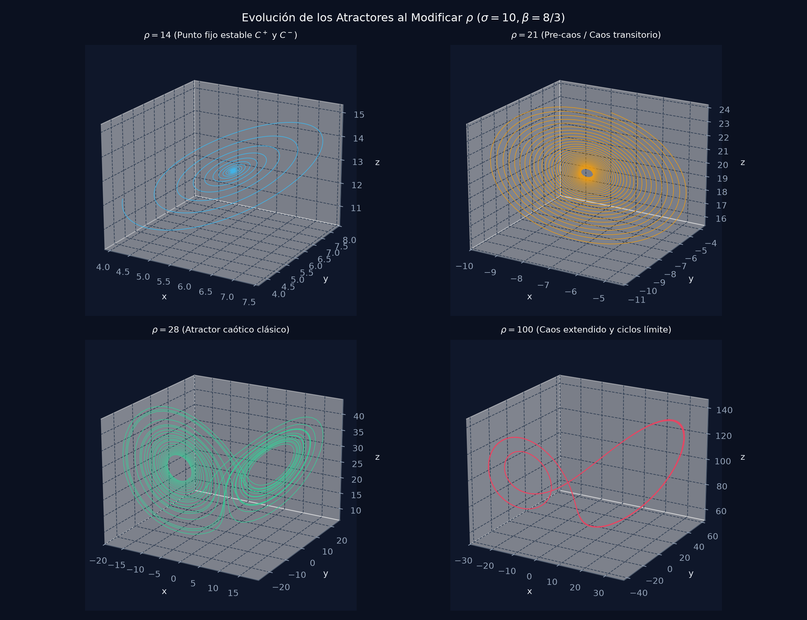
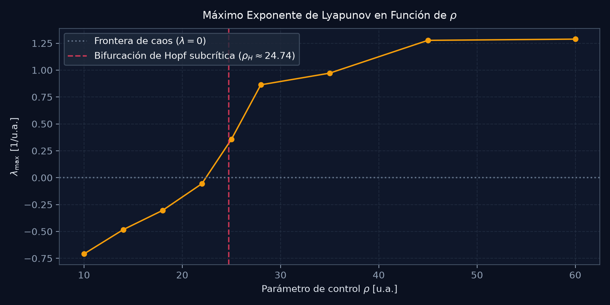
Conclusiones físicas: Para \(\rho = 14\), la trayectoria converge en espiral amortiguada hacia uno de los puntos fijos convectivos (\(\lambda \le 0\)). En \(\rho = 21\), el sistema exhibe un largo transitorio caótico antes de caer en un ciclo o punto fijo. Para \(\rho > 24.74\) (bifurcación de Hopf subcrítica), el atractor extraño se vuelve permanente y el exponente \(\lambda\) se vuelve estrictamente positivo.
Registramos los cruces del atractor continuo sobre el plano transversal bidimensional \(z = 27\) únicamente cuando la trayectoria asciende (\(\dot{z} = xy - \beta z > 0\)).
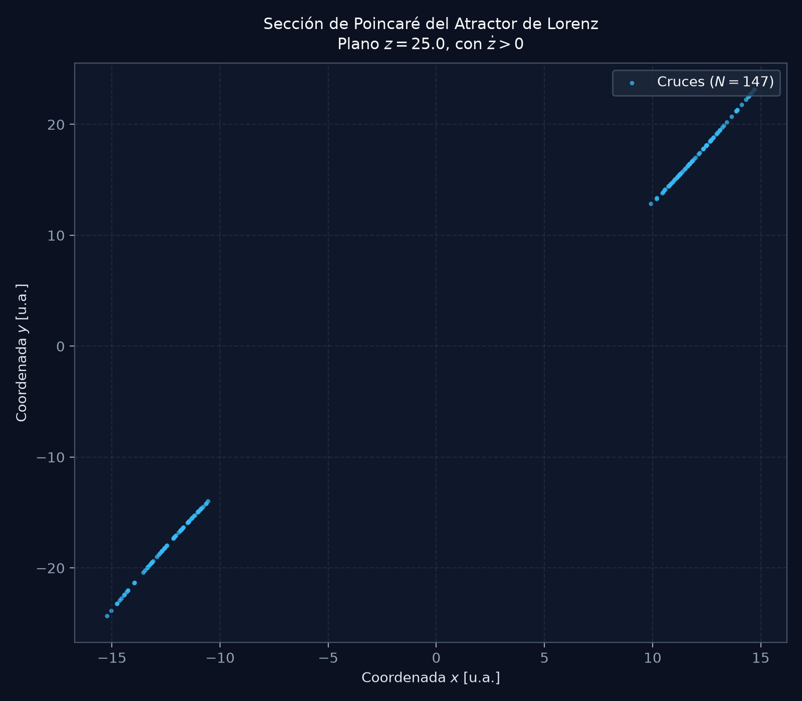
Interpretación geométrica: En lugar de rellenar una nube dispersa bidimensional, los puntos de corte se ordenan a lo largo de dos curvas extremadamente delgadas con estructura de foliación fractal (dimensión de Hausdorff de la sección \(\approx 1.05\)). Esto demuestra que el atractor continuo de dimensión \(\approx 2.06\) se reduce a un mapa casi unidimensional en la sección estroboscópica de Poincaré.
Para cada valor de \(\rho \in [10, 38]\), descartamos el transitorio y detectamos los máximos locales de la variable \(z(t)\):
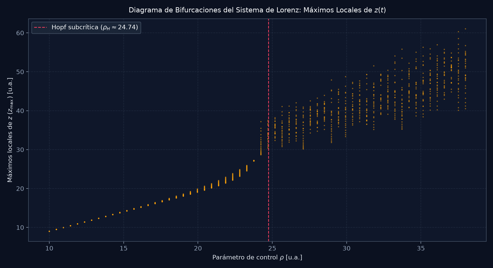
Interpretación: Para valores bajos de \(\rho\), existe una sola rama de picos correspondientes a oscilaciones periódicas regulares. A medida que \(\rho\) supera el umbral crítico, la densidad de puntos se multiplica abruptamente formando un continuo característico de la aperiodicidad caótica, intercalado con posibles ventanas periódicas estrechas.
Generada mediante matplotlib.animation.FuncAnimation y renderizada en formato GIF optimizado (4.9 MB) para visualización sin dependencias externas:
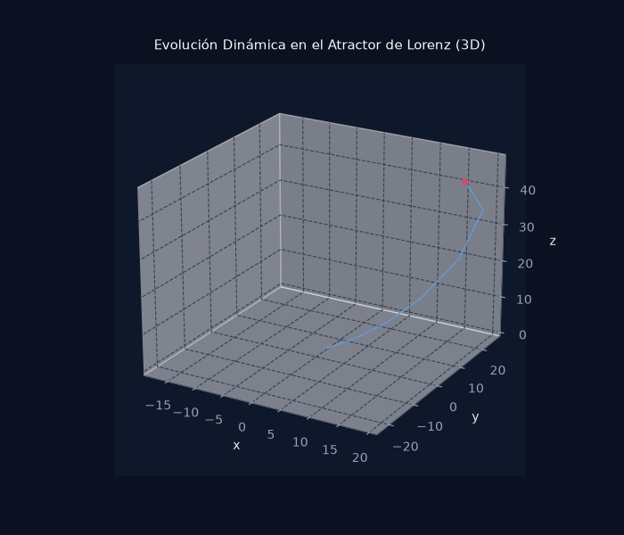
La tarjeta de verificación generada automáticamente certifica el cumplimiento de todos los estándares numéricos exigidos:
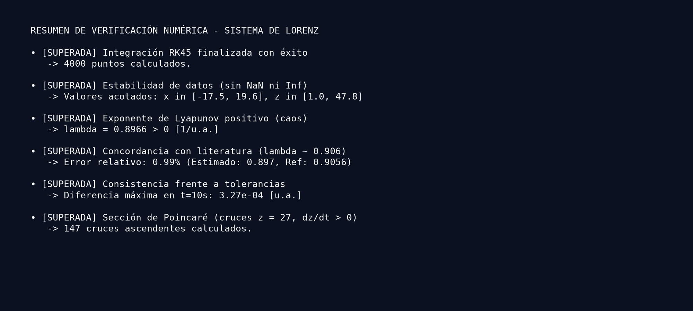
Uno de los errores conceptuales más frecuentes en la física del caos es confundir la geometría del atractor extraño con la sensibilidad a las condiciones iniciales:
| Comprobación | Estado | Resultado Cuantitativo Medido | Criterio Físico / Matemático |
|---|---|---|---|
| Finalización RK45 | SUPERADA | 4000 pasos evaluados, sol.success == True |
Convergencia sin atasco por rigidez (*stiffness*). |
| Estabilidad de Datos | SUPERADA | 0 NaNs, 0 Infs. \(x \in [-17.5, 19.6]\), \(z \in [1.0, 47.8]\) | Trayectoria estrictamente acotada en el atractor. |
| Signo de Lyapunov | SUPERADA | \(\lambda_{\max} = +0.8966 > 0\) [1/u.a.] | Firma rigurosa de caos determinista. |
| Concordancia con Literatura | SUPERADA | Error relativo de 0.99% (\(0.897\) vs \(0.9056\)) | Convergencia asintótica del método de Benettin. |
| Consistencia de Tolerancias | SUPERADA | Discrepancia máx \(\le 3.27 \times 10^{-4}\) (entre \(10^{-7}\) y \(10^{-10}\)) | Solución independiente del error numérico local. |
| Sección de Poincaré | SUPERADA | 147 cruces exactos con \(|z_{\text{cruce}} - 27| < 10^{-12}\) y \(\dot{z} > 0\) | Interpolación lineal continua verificada. |
Las siguientes referencias fundamentales y de libre acceso respaldan las decisiones de implementación, la elección de parámetros y los valores de referencia del proyecto: